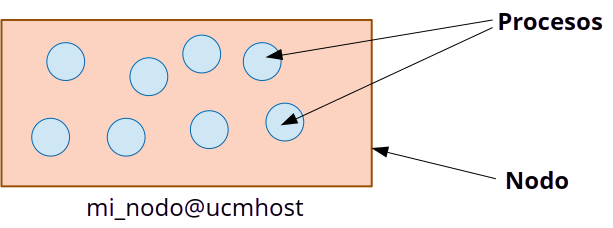
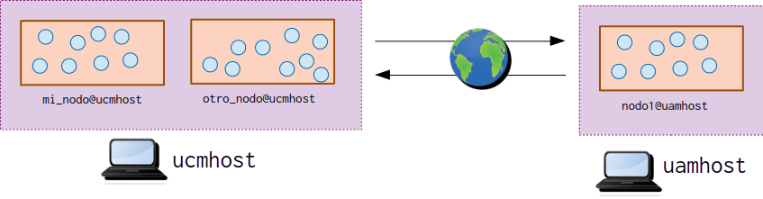
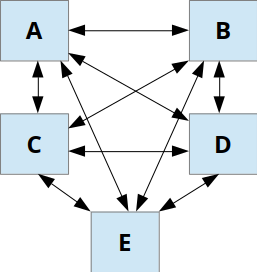

Es un conjunto de ordenadores separados físicamente, pero conectados entre sí por una red de comunicaciones.
Esta separación física es transparente al programador/a.
La comunicación con otros nodos se realiza de la misma manera tanto si estos están en la mismo ordenador, o están en ordenadores distintos.
Se utiliza la misma interfaz entre componentes remotos y componentes locales.
Eficiencia: Permite que distintas partes de un mismo programa se ejecuten de manera paralela en distintas máquinas.
Tolerancia a fallos: Si una de los ordenadores del sistema falla, los demás pueden realizar el trabajo por él.
Acceso a recursos y servicios remotos: Por ejemplo, es posible proporcionar una API de acceso a nuestros servicios web.
Escalabilidad: Es posible aumentar la capacidad de trabajo de nuestro sistema añadiendo más máquinas.
El mecanismo de abstracción que proporciona Elixir para la programación distribuida se basa en el concepto de nodo.
Un nodo es un entorno de ejecución de Elixir al que se ha dado un nombre.

Un mismo ordenador (host) puede tener varios nodos en ejecución.
Un nodo puede comunicarse con los nodos de una misma máquina, o con los de otra distinta.
Tenemos, por tanto, tres niveles: host, nodo y proceso.

iex, este entorno no forma un nodo a menos que le demos un
nombre.
Node.alive?/0 nos permite conocer si estamos
dentro de un entorno de ejecución con nombre.# iex
Interactive Elixir (1.17.1) - press Ctrl+C to exit (type h() ENTER for help)
> Node.alive?()
falseLos nombres de nodo permiten identificar a un nodo dentro de un mismo host.
Dos nodos distintos pueden tener el mismo nombre, siempre que se encuentren en hosts distintos.
Un identificador de nodo es un par (nombre_nodo, nombre_host), y se representa del siguiente modo:
nombre_nodo@nombre_host
A su vez, el nombre de un host puede ser corto o largo.
Nombres cortos: hacen referencia a un host dentro de la red local.
mi_nodo@ucmsafe
Nombres largos: hacen referencia a un host local o externo. Incluyen el nombre del dominio, o la dirección IP.
mi_nodo@ucmsafe.esi.ucm.es
mi_nodo@147.96.80.234
La traducción de nombres largos a direcciones IP se realiza mediante un servidor DNS.
⚠️ Los nodos con nombre corto solo pueden comunicarse con otros nodos con nombre corto, e igualmente para los nodos con nombre largo.
--sname y --name de
iex.
--sname indica un nombre corto--name indica un nombre largo# iex --sname mi_nodo Nombre corto
Erlang/OTP 27 [erts-15.0] [source] [64-bit] [smp:4:4] [ds:4:4:10] [async-threads:1] [jit:ns]
Interactive Elixir (1.17.1) - press Ctrl+C to exit (type h() ENTER for help)
iex(mi_nodo@localhost)1> Node.alive?()
true
iex(mi_nodo@localhost)2> node()
:mi_nodo@localhost# iex --name mi_nodo Nombre largo
Erlang/OTP 27 [erts-15.0] [source] [64-bit] [smp:4:4] [ds:4:4:10] [async-threads:1] [jit:ns]
Interactive Elixir (1.17.1) - press Ctrl+C to exit (type h() ENTER for help)
iex(mi_nodo@localhost.localdomain.com)1> Node.alive?()
true
iex(mi_nodo@localhost.localdomain.com)2> node()
:"mi_nodo@localhost.localdomain.com"La función Node.list/0 permite obtener la lista de
nodos conectados al actual.
Inicialmente, esa lista está vacía.
iex(mi_nodo@localhost)> Node.list()
[]Mediante Node.connect/1
iex(mi_nodo@localhost)> Node.connect(:otro_nodo@localhost)
true
iex(mi_nodo@localhost)> nodes()
[:otro_nodo@localhost]Directamente, enviando un mensaje al nodo remoto.
Hemos visto que la función send/2 recibe como primer
argumento:
Un PID del proceso destinatario
Un átomo con el nombre del proceso destinatario, en caso de que estuviera registrado con un nombre.
Con los nodos distribuidos, hay una tercera posibilidad:
{nombre_proceso, nodo}.Comenzamos creando dos nodos: nodo1 y
nodo2
# iex --sname nodo1
nodo1@localhost> # iex --sname nodo2
nodo2@localhost> Queremos enviar un mensaje desde la shell de
nodo1 a la shell de nodo2. Para ello, tenemos
que registrar el proceso de la segunda shell y asignarle un
nombre:
nodo2@localhost> Process.register(self(), :mi_proceso)Enviamos el mensaje desde la primera shell:
nodo1@localhost> send({:mi_proceso, :nodo2@localhost},
"Hola, mundo")Comprobamos que hemos recibido el mensaje desde la segunda shell:
nodo2@localhost> flush()
"Hola, mundo"¿Qué pasa si la primera shell también envía su PID?
nodo1@localhost> self()
#PID<0.110.0>
nodo1@localhost> send({:mi_proceso, :nodo2@localhost},
{self(), "Hola, mundo"})
{#PID<0.110.0>, "Hola, mundo"}nodo2@localhost> flush
{#PID<13866.110.0>, "Hola, mundo"}¡Los PIDs son distintos!
De los tres números que componen un PID, el primero indica el nodo en el que se encuentra el proceso identificado. Si el proceso forma parte del mismo nodo, esta componente tiene el valor 0.
nodo2@localhost> p = pid(13866,110,0)
nodo2@localhost> send(p, "¿Qué tal?")nodo1@localhost> flush()
"¿Qué tal?"Process.register/2
para asignar un nombre a un proceso. El nombre registrado de esta manera
es local.
{nombre, nodo}.:global.register_name/2.
nodo2@localhost> :global.register_name(:mi_proceso, self()La función send/2 no admite nombres globales. Para poder
hacer uso de un nombre global desde otro nodo, debemos obtener el PID
del proceso registrado mediante :global.whereis_name/1.
nodo1@localhost> p = :global.whereis_name(:mi_proceso)
#PID<13035.110.0>
nodo1@localhost> send(p, "Hola!")nodo2@localhost> flush()
"Hola!"¿Qué pasa si añadimos un tercer nodo y lo conectamos con el segundo?
# iex --sname nodo3
nodo3@localhost> Node.connect(:nodo2@localhost)
true
nodo3@localhost> Node.list()
[:nodo2@localhost, :nodo1@localhost] ¡También se conecta a `nodo1`! Volvemos al primer nodo, para comprobar sus conexiones:
nodo1@localhost> Node.list()
[:nodo2@localhost, :nodo3@localhost]Cuando un nodo A se conecta a otro nodo B, el nodo A también se conectará a aquellos con los que ^ estuviera conectado previamente.
De este modo, se tiene una red de nodos completamente conectada.

⚠️ ¿Cuántas conexiones se producen en una red de N nodos?
Es posible declarar un nodo como oculto, mediante la opción
--hidden de iex.
Los nodos ocultos:
Node.list, salvo que se haga con el argumento
:connected.En el ejemplo anterior, si hubiésemos declarado
nodo3 como oculto:
# iex --sname nodo3 --hidden
nodo3@localhost> Node.connect(:nodo2@localhost)
true
nodo3@localhost> Node.list()
[:nodo2@localhost] Esta vez no se conecta a `nodo2` nodo2@localhost> Node.list()
[:nodo1@localhost] Solo nodos visibles
nodo2@localhost> Node.list(:connected)
[:nodo1@localhost, :nodo3@localhost] También nodos ocultos Node.spawnPermite crear un proceso en un nodo distinto al actual.
Tiene dos variantes:
Node.spawn(nodo, funcion)Node.spawn(nodo, modulo, funcion, args)nodo1@localhost> mi_pid = self()
nodo1@localhost> Node.spawn(:nodo2@localhost, fn ->
send(mi_pid, {self(), "Gracias"})
end)
nodo1@localhost> flush
{#PID<14168.121.0>, "Gracias"}:rpc.callnodo2@localhost> :rpc.call(:nodo1@localhost, Kernel, :+, [3, 4])
7 La suma se ha calculado en `nodo1` Cualquier proceso remoto o llamada remota creada mediante
Node.spawn o :rpc.call se ejecuta con los
mismos derechos que cualquier otro proceso en el nodo remoto.
¡Esto permitiría ejecutar remotamente código malicioso en cualquier nodo Elixir!
> :rpc.call(:servidor@localhost, System, :cmd, "rm -rf *"). ⚠️⚠️ Existe un mecanismo de seguridad que limita los nodos que pueden conectarse a uno dado. Este mecanismo está basado en secret cookies.
Para que dos nodos puedan comunicarse, no basta con que uno conozca el nombre del otro y que ambos estén vivos.
Cuando un nodo se inicia, se le asigna un valor especial (secret cookie).
Solamente los nodos que tengan la misma secret cookie pueden comunicarse.
¿Cómo hemos conseguido hasta ahora que los nodos de un mismo host puedan comunicarse?
Cuando se inicia un entorno de ejecución Elixir en un
host sin especificar ninguna cookie, se le asigna un
valor de cookie aleatorio, guardado en un fichero llamado
.erlang.cookie.
Cuando se inician otro entorno en el mismo host,
comprueba si existe un fichero llamado .erlang.cookie y, en
ese caso, establecen su cookie al valor contenido en dicho
fichero.
Todos los nodos de un mismo host, por defecto, comparten la misma cookie.
No obstante, para que dos nodos en distintas máquinas (o distintos sistemas de ficheros) puedan comunicarse, es necesario establecer en ambos la misma secret cookie.
Esto es posible mediante la opción --setcookie de
iex.
# iex --sname nodo1 --setcookie ABCDo bien mediante la función Node.set_cookie/1
> Node.set_cookie(:ABCD)Las cookies permite acotar qué nodos pueden conectarse a uno dado.
Sin embargo, cuando dos nodos se conectan, uno siempre podrá ejecutar código arbitrario sobre otro.
Esto no es un problema si ambos nodos pertenecen al mismo cluster, y ambos tienen confianza mutua (trusted environment).
Sin embargo, en contextos en los que no existe ese tipo de confianza, hay que utilizar otro tipo de mecanismos, como los sockets.